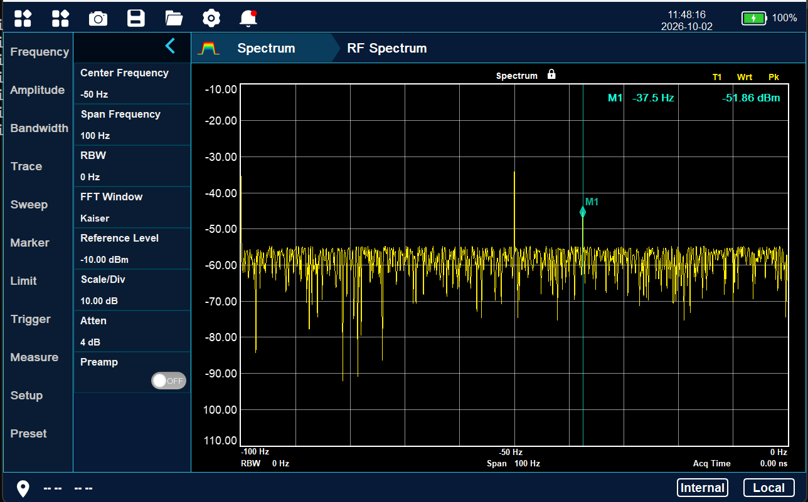

Measurement software / Spectrum analysis
Spectrum analyzer platform
An analysis environment for swept and real-time spectrum workflows, modulation measurements and inspection of IQ data.
Spectrum measurement workspace
The project brings instrument settings and signal inspection into one measurement interface. The spectrum view keeps the trace, frequency range, amplitude scale and marker readout together so engineers can interpret a signal in the context of its current configuration.

Interface and measurement controls
- Frequency and bandwidth. Dedicated controls expose center frequency, span, resolution bandwidth and FFT window selection.
- Amplitude setup. Reference level, scale per division, attenuation and preamplifier state sit alongside the plot.
- Trace inspection. The plotted spectrum and M1 frequency and level readouts help engineers examine individual points in the signal.
- Instrument workflow. The interface groups trace, sweep, marker, limit, trigger and measurement settings into separate navigation areas.
Software design focus
Acquisition, analysis and display need a consistent measurement state. Frequency axes, amplitude units and marker positions should follow the active configuration, while parameter changes remain easy to review. The layout gives the spectrum most of the screen and keeps frequently used controls close to it.
The broader project direction covers swept and real-time spectrum workflows, IQ inspection and wireless modulation analysis. The screenshot above illustrates the spectrum interface.